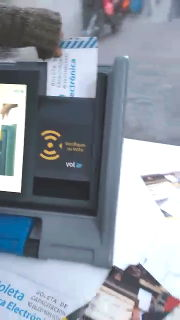

A presentation about the Vot.Ar (aka BUE) system, its HW, SW & Vulns.
Also, a bit about eVoting.
For the SBSeg 15, Florianopolis, Brasil.
Your browser doesn't support the characteristics required for this presentation, so a simplified version will be shown.
For a better experience, please use Firefox, Chrome or Safari.
Also, a bit about eVoting.
For the SBSeg 15, Florianopolis, Brasil.
Presenter: Iván (HacKan) A. Barrera Oro.
Colaborators: Francisco Amato, Enrique Chaparro, Sergio Demian Lerner, Alfredo Ortega, Juliano Rizzo, Fernando Russ, Javier Smaldone, Nicolas Waisman.
And the people of the internet...

Vot.Ar a.k.a BUE that stands for Unique Electronic Ballot in Spanish, is a paper-based eVoting system by MSA Group. It has two main elements:
Most obvious vulnerability?
among others...
Why is RFID such a bad idea?

* Constitutional rights
The system reported here is as it was used in this year's elections in Buenos Aires Autonomous City (CABA)
 Portable unit, somewhat bigger than a suitcase
Portable unit, somewhat bigger than a suitcase
On the left:
On the right:
On the top:
|
|
* BadUSB?...
On the bottom:
On the other hand there's the ballot, which has an RFID chip + thermal paper on the back.
Also a die-cutting on one side, to verify that the ballot wasn't swapped.
Details in a moment...
But propaganda said:
It's a printer, not a computer!
and everybody believed it!
 The
Electoral Authority provides the software DVD, with a President Id card
(w/ RFID chip) and Log-in credentials, in a sealed envelope.
The
Electoral Authority provides the software DVD, with a President Id card
(w/ RFID chip) and Log-in credentials, in a sealed envelope.
 Select the option to open the Polling Station, fill in required data.
Select the option to open the Polling Station, fill in required data.
|
 1
1
|
|
|
|

3
|
|
4
|
|
 5
5
|
|
|
When the voting ends (at 6 PM):
We weren't able to obtain more information regarding this point.
The special ballot created didn't worked, hence we were never able to complete this procedure.


 Some machines had it even during elections!
Threat level: high
Some machines had it even during elections!
Threat level: high
Can be used to reprogram the uC!
More on this at Javier's blog.
So, we found an unknown subsystem:

The uC ARM controls the thermal printer and the RFID reader/writer.
Its internal E2PROM memory is sufficient to store
every vote cast and more.
We know nothing, Jon Snow!

| Brand | Model | Mem size (Bytes) | Note |
|---|---|---|---|
| NXP | ICODE SLI SL2ICS20 or SLIX SL2S2002 (ISO 15693) | 112 | has a unique ID code |
| Tag Categories | ||
|---|---|---|
| Empty Tag 0x0000 | Vote 0x0001 | MSA Technician 0x0002 |
| President of the Polling Station 0x0003 | Scrutiny Finalised 0x0004 | Polling Station Open 0x0005 |
| Demonstration 0x0006 | Scrutiny Transmission 0x007F | |
| Virgin Tag 0x0007 (?) | Addendum 0x007F (?) | Unknown Tag 0xFFFF (?) |
K1 T2 T1 L1 C4 C3 C2 C1 D1...Dn W1 W2 W3 W4
| Type | Desc | Size (bytes) | Endianness | Stored as | Fixed value |
|---|---|---|---|---|---|
| K | Token | 1 | - | HEX | 0x1C |
| T | Tag category | 2 | little-endian | HEX | - |
| L | Data lenght | 1 | - | HEX | - |
| C | CRC32(Data) | 4 | little-endian | HEX | - |
| D | Data | n | - | ASCII | - |
| W | Write test? | 4 | - | ASCII | W_OK |
More info about the chip and how data is stored: see IV. B of the report
We were able to do it thanks to the help of someone named Prometheus, who published the source code.
This makes the code hard to read, audit, maintain, improve...
...but ideal to breed nasty bugs...
...such as #multivote and others...
Alfredo Ortega found a command injection vulnerability in the QR Code generator routine.
a_qr_str() returns a comma-separated list of values.a_qr() sends those values to the vulnerable function.crear_qr() vulnerable function, executes the command without sanitising first.This routine is executed to print the QR code of the names of the President of the Polling Station and Party Polling Authorities.
Juan
Perez;echo 'this is bad!'
The name input screen does sanitise and has a length limit, so exploiting this is complicated.
Threat level: medium
This vulnerability allows an attacker to add several votes to the RFID chip, as many as the chip's memory amount supports (about 10~12 votes).
Also, it's not mandatory to distribute the votes in any way: they can be for a single candidate, or split among several candidates, in the same or different electoral category.
Threat level: critical (CVE-2015-6839)
You cannot differentiate between a multivote ballot and a normal one with a naked eye.
So, an attacker with access to a thermal printer and blank ballots (not too hard to get) could cast fake votes beforehand that are very hard to detect.
An attacker could also use adhesive rfid tags, and create the multivote with a mobile phone.
It was recognized by Prof. Righetti's latest audit (but it's importance was diminished).
The vulnerable method is desde_string belonging to the class Seleccion in msa/core/clases.py
This would be a normal vote for "Representative" (DIP), "Mayor"
(JEF) and "Commune Chief" (COM) for the Autonomous City of Buenos Aires (CABA): 06CABA.1COM567DIP432JEF123.
And this would be a multivote string: 06CABA.1JEF123JEF123JEF123COM567DIP432 where the Mayor got three votes and the rest of the categories, one.
See point IV. B. 1 and Appendix B. C of the report
For example, it's possible to find some info online, at the electoral authority's website:

This is trivial, since no authentication is used with the chip's data.
Get some spare RFID chips and:
 Use the President ballot to pop up
Use the President ballot to pop up Use the Polling Station Open ballot
Logged-in!
Use the Polling Station Open ballot
Logged-in!
Threat level: high
Allows DVD ejection & some DoS. Another evidence of a bad design...
Infographics by Andres Snitcofsky.

BUE stands for Unique Electronic Ballot and BUP for Unique Paper Ballot (in Spanish)
| BUE | BUP |
|---|---|
| Both: better than traditional (french) system | |
| ~U$D 9 per vote | ~U$D 2 per vote |
| 1.84Kg of batteries per machine * 9k machines = 16.5Ton! | No batteries needed |
| Ballots hard to recycle | Easily reciclable |
| 1 DVD per machine... what do we do with them? Coasters? | No DVDs required |
| Provisional scrutiny faster than manual (~30%) | Manual provisional scrutiny, but could be automated |
| It is eVoting | It is not eVoting |
Much more detailed explanation by Javier.
There's no major advantage between BUP and BUE on any point.
(so, no improvements from a simple sheet of paper?)
Yet, BUE introduces an improved way to buy votes, that can be exploited by point men (political bosses).
It's plain easy to hide a mobile phone under the clothes with an app reading the contents of the chip:

Thanks to Tristán Grimaux for the app - Get the code!
As the General Court in Germany ruled, according to its Constitution:
When electronic voting machines are deployed, it must be possible for the citizen to check the essential steps in the election act and in the ascertainment of the results reliably and without special expert knowledge.
After all we saw:
We conclude that this system doesn't comply with its objectives and introduces risks to the electoral process
I hope you've enjoyed this presentation!. Ask whatever you want, there are no restrictions*.
I propose some:
* Some restrictions may apply
Also, I want to thank everybody who supported us:
And the WTE SBSeg organisers for providing a place to share:
Very special thanks to Diego and Jeroen who invited me here!
You can get the full report, this presentation and more at the git repo:
Feel free to share! (CC BY-SA v4.0).
Powered by impress.js
Use the arrow keys to move forward/backward